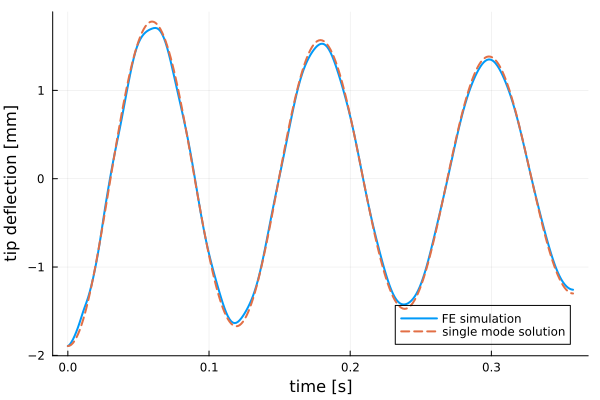
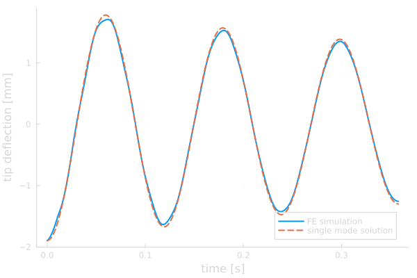

Elastodynamics and modal analysis


Figure 1: Free vibration of the cantilever beam after the static tip load is released at $t = 0$, colored by the deflection magnitude (displacements exaggerated by a factor of 75). The animation covers three periods of the first bending mode.
This tutorial is also available as a Jupyter notebook: elastodynamics.ipynb.
Introduction
This tutorial is a follow-up to the linear elasticity tutorial where we take the step from statics to dynamics: instead of asking how much a structure deforms under a load, we ask how it moves — at which frequencies it prefers to vibrate, and how it responds over time when a load is suddenly removed.
Concretely, we compute the natural frequencies and vibration modes of a cantilever beam (modal analysis), and then simulate its free vibration after releasing a static tip load, using Newmark time integration. Since a slender cantilever is a classic textbook problem, we can verify both parts against analytical Euler-Bernoulli beam theory.
This tutorial teaches the following new concepts on top of the linear elasticity tutorial:
- Assembly of the (consistent) mass matrix
- Solving the generalized eigenvalue problem for natural frequencies and mode shapes
- Rayleigh damping
- Implicit time integration of second order systems with the Newmark method
Strong and semi-discrete form
The balance of momentum, now including the inertia term, reads
\[\mathrm{div}(\boldsymbol{\sigma}) + \boldsymbol{b} = \rho \ddot{\boldsymbol{u}} \quad \boldsymbol{x} \in \Omega\]
where $\rho$ is the density and $\ddot{\boldsymbol{u}}$ the acceleration. As before we use linear isotropic elasticity, $\boldsymbol{\sigma} = \mathsf{C} : \boldsymbol{\varepsilon}$, and neglect body forces. Multiplying with a test function $\delta\boldsymbol{u}$ and integrating by parts gives the weak form: find $\boldsymbol{u} \in \mathbb{U}$ such that
\[\int_\Omega \delta\boldsymbol{u} \cdot \rho \ddot{\boldsymbol{u}}\, \mathrm{d}\Omega + \int_\Omega \mathrm{grad}(\delta\boldsymbol{u}) : \boldsymbol{\sigma}\, \mathrm{d}\Omega = \int_\Gamma \delta\boldsymbol{u} \cdot \boldsymbol{t}\, \mathrm{d}\Gamma \quad \forall\, \delta\boldsymbol{u} \in \mathbb{T}.\]
Introducing the finite element approximation $\boldsymbol{u} \approx \boldsymbol{N}_j \hat{u}_j(t)$ (note that the nodal values now depend on time while the shape functions depend on space only) yields the semi-discrete equation of motion
\[M_{ij} \ddot{\hat{u}}_j + K_{ij} \hat{u}_j = f_i^\mathrm{ext}\]
with the stiffness matrix $K_{ij}$ known from the linear elasticity tutorial, and the (consistent) mass matrix
\[M_{ij} = \int_\Omega \rho\, \boldsymbol{N}_i \cdot \boldsymbol{N}_j\, \mathrm{d}\Omega .\]
In practice one often adds a damping term $C_{ij} \dot{\hat{u}}_j$ to the left hand side. Since damping is difficult to characterize from first principles, a common pragmatic choice is Rayleigh damping,
\[\underline{\underline{C}} = \alpha \underline{\underline{M}} + \beta \underline{\underline{K}},\]
which we will use in the second part of this tutorial. The semi-discrete equation of motion including damping then reads
\[M_{ij} \ddot{\hat{u}}_j + C_{ij} \dot{\hat{u}}_j + K_{ij} \hat{u}_j = f_i^\mathrm{ext}.\]
Modal analysis
Assuming free ($f^\mathrm{ext} = 0$), undamped vibration with the harmonic ansatz $\hat{u}_j(t) = \phi_j \sin(\omega t)$, the equation of motion reduces to the generalized eigenvalue problem
\[K_{ij} \phi_j = \omega^2 M_{ij} \phi_j\]
where the eigenvalues $\omega^2$ are the squares of the angular natural frequencies, and the eigenvectors $\phi_j$ are the corresponding vibration modes.
For a slender cantilever beam, Euler-Bernoulli beam theory provides the analytical natural frequencies
\[f_n = \frac{(\beta_n L)^2}{2\pi L^2} \sqrt{\frac{EI}{\rho A}}\]
where $(\beta_n L)^2 \in \{3.5160, 22.0345, 61.6972, 120.0902, \ldots\}$ for the first bending modes, $A$ is the cross section area and $I$ the area moment of inertia about the bending axis (see e.g. the cantilevered beam example on Wikipedia). We will use these as reference values.
Newmark time integration
For the transient simulation we discretize in time with the Newmark method: given the solution $(\underline{u}_n, \underline{v}_n, \underline{a}_n)$ at time $t_n$ (displacement, velocity and acceleration), the update to $t_{n+1} = t_n + \Delta t$ is
\[\begin{align*} \underline{u}_{n+1} &= \underline{u}_n + \Delta t\, \underline{v}_n + \Delta t^2 \left[\left(\tfrac{1}{2} - \beta_\mathrm{N}\right) \underline{a}_n + \beta_\mathrm{N}\, \underline{a}_{n+1}\right] \\ \underline{v}_{n+1} &= \underline{v}_n + \Delta t \left[(1 - \gamma_\mathrm{N})\, \underline{a}_n + \gamma_\mathrm{N}\, \underline{a}_{n+1}\right] \end{align*}\]
where the new acceleration $\underline{a}_{n+1}$ is found by inserting these expressions into the equation of motion at $t_{n+1}$,
\[\left[\underline{\underline{M}} + \gamma_\mathrm{N} \Delta t\, \underline{\underline{C}} + \beta_\mathrm{N} \Delta t^2\, \underline{\underline{K}}\right] \underline{a}_{n+1} = \underline{f}_{n+1} - \underline{\underline{C}}\, \underline{\tilde{v}}_{n+1} - \underline{\underline{K}}\, \underline{\tilde{u}}_{n+1}\]
with the predictors $\underline{\tilde{u}}_{n+1} = \underline{u}_n + \Delta t\, \underline{v}_n + (\tfrac{1}{2} - \beta_\mathrm{N}) \Delta t^2\, \underline{a}_n$ and $\underline{\tilde{v}}_{n+1} = \underline{v}_n + (1 - \gamma_\mathrm{N}) \Delta t\, \underline{a}_n$. We use the parameters $\beta_\mathrm{N} = 1/4$ and $\gamma_\mathrm{N} = 1/2$ ("average acceleration"), for which the method is unconditionally stable and second order accurate. Note that the matrix on the left hand side, the effective mass matrix
\[\underline{\underline{M}}_\mathrm{eff} = \underline{\underline{M}} + \gamma_\mathrm{N} \Delta t\, \underline{\underline{C}} + \beta_\mathrm{N} \Delta t^2\, \underline{\underline{K}},\]
is constant, so it can be factorized once before the time stepping loop. Since we solve the equation of motion for the acceleration $\underline{a}_{n+1}$ this is the acceleration form of the Newmark method; textbooks also commonly present the equivalent displacement form, where the update expressions are instead inserted into the equation of motion such that an effective stiffness system is solved for $\underline{u}_{n+1}$.
Implementation
First we load the packages we need: KrylovKit provides the iterative eigenvalue solver, and WriteVTK the paraview_collection used to write time series output.
using Ferrite, SparseArrays, LinearAlgebra
using KrylovKit, WriteVTK
import PlotsGeometry and discretization
We consider a slender steel cantilever, 1 m long with a rectangular 50 mm × 10 mm cross section, clamped at $x = 0$. Since the geometry is a box we can use generate_grid directly. All quantities are in SI units (m, kg, s, Pa).
L = 1.0 # beam length in x [m]
w = 0.05 # width in y [m]
h = 0.01 # thickness in z [m]
grid = generate_grid(Hexahedron, (60, 4, 2), zero(Vec{3}), Vec(L, w, h));Low order elements behave overly stiff in bending ("shear locking"), which would significantly overestimate the natural frequencies on this coarse mesh. We therefore use quadratic Lagrange interpolation for the displacement field, while the geometry (which is exactly represented by the trilinear hexahedra) keeps its linear interpolation. When choosing the quadrature rule the mass matrix needs to be kept in mind: since its integrand $\rho\, \boldsymbol{N}_i \cdot \boldsymbol{N}_j$ contains the product of two shape function values it is of higher polynomial degree (4 per direction for the quadratic interpolation) than the typical stiffness terms containing gradients, and a Gauss rule with three points per direction (exact through degree 5) is required to integrate it exactly on the affine cells used here.
ip = Lagrange{RefHexahedron, 2}()^3
ip_geo = Lagrange{RefHexahedron, 1}()
qr = QuadratureRule{RefHexahedron}(3)
cellvalues = CellValues(qr, ip, ip_geo);Distribute the degrees of freedom, and clamp all displacement components on the left facet set.
dh = DofHandler(grid)
add!(dh, :u, ip)
close!(dh)
ch = ConstraintHandler(dh)
add!(ch, Dirichlet(:u, getfacetset(grid, "left"), (x, t) -> zero(Vec{3})))
close!(ch);Material
We use the same isotropic linear elasticity as in the linear elasticity tutorial (but in 3d, and with parameters for steel), and additionally define the density.
Emod = 210.0e9 # Young's modulus [Pa]
ν = 0.3 # Poisson's ratio [-]
ρ = 7850.0 # density [kg/m³]
Gmod = Emod / (2 * (1 + ν)) # Shear modulus
Kmod = Emod / (3 * (1 - 2ν)) # Bulk modulus
C = gradient(ϵ -> 2 * Gmod * dev(ϵ) + 3 * Kmod * vol(ϵ), zero(SymmetricTensor{2, 3}));Assembly of the stiffness and mass matrices
The element routine computes the element stiffness matrix ke and the element mass matrix me in the same quadrature loop. Compared to the linear elasticity tutorial, the only new ingredient is the term ρ * (Nᵢ ⋅ Nⱼ) where Nᵢ and Nⱼ are the (vector valued) shape function values rather than their gradients.
function assemble_cell!(ke, me, cellvalues, C, ρ)
for q_point in 1:getnquadpoints(cellvalues)
dΩ = getdetJdV(cellvalues, q_point)
for i in 1:getnbasefunctions(cellvalues)
Nᵢ = shape_value(cellvalues, q_point, i)
∇Nᵢ = shape_gradient(cellvalues, q_point, i)
for j in 1:getnbasefunctions(cellvalues)
Nⱼ = shape_value(cellvalues, q_point, j)
∇ˢʸᵐNⱼ = shape_symmetric_gradient(cellvalues, q_point, j)
ke[i, j] += (∇Nᵢ ⊡ C ⊡ ∇ˢʸᵐNⱼ) * dΩ
me[i, j] += ρ * (Nᵢ ⋅ Nⱼ) * dΩ
end
end
end
return
endThe global assembly loops over all cells and assembles into both global matrices, using one assembler for each.
function assemble_global!(K, M, dh, cellvalues, C, ρ)
n_basefuncs = getnbasefunctions(cellvalues)
ke = zeros(n_basefuncs, n_basefuncs)
me = zeros(n_basefuncs, n_basefuncs)
K_assembler = start_assemble(K)
M_assembler = start_assemble(M)
for cell in CellIterator(dh)
reinit!(cellvalues, cell)
fill!(ke, 0.0)
fill!(me, 0.0)
assemble_cell!(ke, me, cellvalues, C, ρ)
assemble!(K_assembler, celldofs(cell), ke)
assemble!(M_assembler, celldofs(cell), me)
end
return
end
K = allocate_matrix(dh)
M = allocate_matrix(dh)
assemble_global!(K, M, dh, cellvalues, C, ρ);Part 1: Modal analysis
To solve the eigenvalue problem we restrict the matrices to the free degrees of freedom, i.e. we simply delete the rows and columns belonging to the constrained (clamped) dofs.
For linear systems we usually enforce Dirichlet conditions with apply!, which zeroes the constrained rows and columns and assigns a representative diagonal value. Applying it separately to both K and M would retain the constrained dofs and introduce one artificial eigenpair per constrained dof. These artificial eigenpairs have $\omega^2 = \bar{k} / \bar{m}$, where $\bar{k}$ and $\bar{m}$ are the diagonal values inserted into K and M; depending on the problem and mesh, they can contaminate the part of the spectrum of interest. Restricting the matrices to the free dofs avoids these nonphysical modes altogether.
fdofs = free_dofs(ch)
Kf = K[fdofs, fdofs]
Mf = M[fdofs, fdofs];We want the smallest eigenvalues of $K \phi = \omega^2 M \phi$, since the lowest frequencies dominate the structural response. Iterative eigensolvers however converge to the eigenvalues of largest magnitude. The standard remedy is the shift-and-invert trick: the operator $K^{-1} M$ has eigenvalues $1 / \omega^2$, so its largest eigenvalues correspond exactly to the smallest natural frequencies. Since Kf is symmetric positive definite (rigid body motion is prevented by the clamping) we can factorize it once with a Cholesky factorization, and hand the operator to KrylovKit as a plain function.
nev = 6 # number of modes to compute
Kfact = cholesky(Symmetric(Kf))
vals, vecs, info = eigsolve(x -> Kfact \ (Mf * x), length(fdofs), nev, :LM; krylovdim = 40)
info.converged >= nev || error("eigensolver did not converge");Back-transforming the eigenvalues gives the natural frequencies in Hz:
ω² = [1 / real(v) for v in vals[1:nev]]
freqs = sqrt.(ω²) ./ (2π)6-element Vector{Float64}:
8.383449673624309
41.75733103432498
52.515019677947365
146.97073707506914
258.70443386078165
287.82671863041924Let us compare with the Euler-Bernoulli beam theory predictions. Bending about the weak axis (deflection in the thickness direction $z$) uses $I = w h^3 / 12$, and about the strong axis (deflection in $y$) $I = h w^3 / 12$:
function analytical_frequencies(EI, m, L, n)
βL² = (3.51602, 22.0345, 61.6972, 120.0902)
return [βL²[i] / (2π * L^2) * sqrt(EI / m) for i in 1:n]
end
A = w * h
f_weak = analytical_frequencies(Emod * w * h^3 / 12, ρ * A, L, 4)
f_strong = analytical_frequencies(Emod * h * w^3 / 12, ρ * A, L, 2)
reference = sort!(
vcat(
[(f, "weak (z)") for f in f_weak],
[(f, "strong (y)") for f in f_strong],
)
)[1:nev]
f_analytical = first.(reference);Sorting the beam theory frequencies tells us which bending direction each computed mode corresponds to, so we can print the comparison as a table:
println("mode bending axis f_FE [Hz] f_beam [Hz] error [%]")
for i in 1:nev
f_ref, axis = reference[i]
err = round(100 * abs(freqs[i] - f_ref) / f_ref; digits = 1)
println(
lpad(i, 4), " ", rpad(axis, 12), " ", lpad(round(freqs[i]; digits = 1), 9),
" ", lpad(round(f_ref; digits = 1), 11), " ", lpad(err, 9),
)
endmode bending axis f_FE [Hz] f_beam [Hz] error [%]
1 weak (z) 8.4 8.4 0.3
2 strong (y) 41.8 41.8 0.0
3 weak (z) 52.5 52.4 0.3
4 weak (z) 147.0 146.6 0.2
5 strong (y) 258.7 261.8 1.2
6 weak (z) 287.8 285.4 0.9The frequencies match beam theory to within about a percent, and the mode ordering comes out interleaved as expected: the first two bending modes about the weak axis (modes 1 and 3) bracket the first mode about the stiffer strong axis (mode 2). The largest deviation occurs for the highest strong axis mode, where the slenderness assumption of Euler-Bernoulli theory starts to break down (shear deformation and rotary inertia, included in the finite element model but not in the beam theory, reduce the frequency).
To visualize the mode shapes we scatter each eigenvector back into a full-length dof vector (constrained dofs are zero) and export to VTK. In ParaView, apply Warp by vector with a suitable scale factor to see the modes; since eigenvectors have arbitrary magnitude, we normalize the largest dof value to 1.
for (i, ϕf) in enumerate(vecs[1:nev])
ϕ = zeros(ndofs(dh))
ϕ[fdofs] .= real.(ϕf) ./ maximum(abs ∘ real, ϕf)
VTKGridFile("elastodynamics_mode_$i", dh) do vtk
write_solution(vtk, dh, ϕ)
end
end

Figure 2: The four lowest vibration modes, from top to bottom. Modes 1, 3 and 4 are the first three bending modes about the weak axis, deflecting in the thickness direction $z$; mode 2 (second from the top, recognizable by its wide face) is the first bending mode about the strong axis, deflecting sideways in $y$. For easy comparison all modes are drawn bending in the plane of the page, i.e. the weak axis modes are rotated a quarter turn about the beam axis.
Part 2: Free vibration after load release
Next we simulate the beam "twang": we load the beam tip statically, release the load at $t = 0$, and integrate the equation of motion in time, including the light Rayleigh damping introduced earlier. Releasing a deflection in the thickness direction $z$ excites (almost exclusively) the bending modes about the weak axis, i.e. modes 1, 3, 4, $\ldots$ from the modal analysis, so we calibrate the Rayleigh coefficients such that the damping ratio is $\zeta = 2\,\%$ for the first two of those, modes 1 and 3:
\[\zeta_n = \frac{1}{2} \left(\frac{\alpha}{\omega_n} + \beta \omega_n\right) \quad \Rightarrow \quad \alpha = \frac{2 \zeta \omega_1 \omega_3}{\omega_1 + \omega_3}, \quad \beta = \frac{2 \zeta}{\omega_1 + \omega_3}\]
Note that with this calibration all modes with frequencies in between are damped slightly below 2 %, and modes outside the interval progressively stronger.
ζ = 0.02
ω₁, ω₃ = sqrt(ω²[1]), sqrt(ω²[3])
α = 2 * ζ * ω₁ * ω₃ / (ω₁ + ω₃)
β = 2 * ζ / (ω₁ + ω₃)
Cf = α * Mf + β * Kf;For the initial condition we apply a uniform traction $t_z = -10$ kPa on the tip facet ("right") and solve the static problem, reusing assemble_external_forces! from the linear elasticity tutorial:
function assemble_external_forces!(f_ext, dh, facetset, facetvalues, prescribed_traction)
# Create a temporary array for the facet's local contributions to the external force vector
fe_ext = zeros(getnbasefunctions(facetvalues))
for facet in FacetIterator(dh, facetset)
# Update the facetvalues to the correct facet number
reinit!(facetvalues, facet)
# Reset the temporary array for the next facet
fill!(fe_ext, 0.0)
# Access the cell's coordinates
cell_coordinates = getcoordinates(facet)
for qp in 1:getnquadpoints(facetvalues)
# Calculate the global coordinate of the quadrature point.
x = spatial_coordinate(facetvalues, qp, cell_coordinates)
tₚ = prescribed_traction(x)
# Get the integration weight for the current quadrature point.
dΓ = getdetJdV(facetvalues, qp)
for i in 1:getnbasefunctions(facetvalues)
Nᵢ = shape_value(facetvalues, qp, i)
fe_ext[i] += tₚ ⋅ Nᵢ * dΓ
end
end
# Add the local contributions to the correct indices in the global external force vector
assemble!(f_ext, celldofs(facet), fe_ext)
end
return f_ext
end
facet_qr = FacetQuadratureRule{RefHexahedron}(3)
facetvalues = FacetValues(facet_qr, ip, ip_geo)
f_static = zeros(ndofs(dh))
assemble_external_forces!(f_static, dh, getfacetset(grid, "right"), facetvalues, x -> Vec(0.0, 0.0, -1.0e4));
u₀ = Kfact \ f_static[fdofs];During the simulation we will track the deflection of the beam tip (the center of the tip facet) using a PointEvalHandler:
x_tip = Vec(L, w / 2, h / 2)
ph = PointEvalHandler(grid, [x_tip]);We can use it right away to check the static solution against beam theory, which predicts the tip deflection $P L^3 / (3 E I)$ for a cantilever with a tip load $P$. To evaluate the solution we scatter the free dof values into a full-length dof vector and use apply! to fill in the values of the constrained dofs (for our homogeneous constraints this just writes zeros, but it is the general pattern):
u_full = zeros(ndofs(dh))
u_full[fdofs] .= u₀
apply!(u_full, ch)
δ_tip = evaluate_at_points(ph, dh, u_full, :u)[1][3]
P = -1.0e4 * w * h # resultant tip load [N]
δ_beam = P * L^3 / (3 * Emod * w * h^3 / 12)
(δ_tip, δ_beam)(-0.0018949818684351962, -0.0019047619047619043)At $t = 0$ the load is removed, so the initial velocity is zero and the initial acceleration follows from the equation of motion at $t = 0$, $\underline{\underline{M}}\, \underline{a}_0 = - \underline{\underline{C}}\, \underline{v}_0 - \underline{\underline{K}}\, \underline{u}_0 = - \underline{\underline{K}}\, \underline{u}_0$, where the damping term drops out since $\underline{v}_0 = \underline{0}$.
v₀ = zero(u₀)
a₀ = cholesky(Symmetric(Mf)) \ (-Kf * u₀);We choose the time step to resolve the first period with 100 steps and simulate three full periods. Note that the average acceleration Newmark method is unconditionally stable, so the time step is chosen based on accuracy (and the frequency content we want to resolve), not stability.
T₁ = 2π / ω₁ # first natural period [s]
Δt = T₁ / 100
n_steps = 300300In each time step the new acceleration is solved for from the effective mass matrix derived in the introduction,
\[\underline{\underline{M}}_\mathrm{eff} = \underline{\underline{M}} + \gamma_\mathrm{N} \Delta t\, \underline{\underline{C}} + \beta_\mathrm{N} \Delta t^2\, \underline{\underline{K}}.\]
Since it is constant it can be factorized once, before the time stepping loop:
γ_N = 1 / 2
β_N = 1 / 4
M_eff = cholesky(Symmetric(Mf + γ_N * Δt * Cf + β_N * Δt^2 * Kf));The time stepping loop closely follows the equations stated in the introduction, with the factorized effective mass matrix M_eff used to solve for the acceleration in every step. The Dirichlet constraints are built into the free-dof vectors — the clamped dofs never enter the solve — so, as for the static solution above, we only need to scatter the free values into the full-length vector u_full for postprocessing. We record the tip deflection every step, and write output for ParaView every fifth step.
function newmark_solve!(pvd, u, v, a, dh, ch, ph, fdofs, Kf, Cf, M_eff, Δt, β_N, γ_N, n_steps)
u_full = zeros(ndofs(dh))
u_full[fdofs] .= u
apply!(u_full, ch)
tip_history = [(0.0, evaluate_at_points(ph, dh, u_full, :u)[1][3])]
# Write the initial condition (the static deflection) as the first frame
VTKGridFile("elastodynamics_step_0", dh) do vtk
write_solution(vtk, dh, u_full)
pvd[0.0] = vtk
end
for step in 1:n_steps
t = step * Δt
# Predictors
ũ = u .+ Δt .* v .+ (1 / 2 - β_N) * Δt^2 .* a
ṽ = v .+ (1 - γ_N) * Δt .* a
# Solve for the new acceleration (the external force is zero after the release)
a .= M_eff \ (-Cf * ṽ - Kf * ũ)
# Correctors
u .= ũ .+ β_N * Δt^2 .* a
v .= ṽ .+ γ_N * Δt .* a
# Postprocessing
u_full[fdofs] .= u
apply!(u_full, ch)
push!(tip_history, (t, evaluate_at_points(ph, dh, u_full, :u)[1][3]))
if step % 5 == 0
VTKGridFile("elastodynamics_step_$step", dh) do vtk
write_solution(vtk, dh, u_full)
pvd[t] = vtk
end
end
end
return tip_history
end
pvd = paraview_collection("elastodynamics")
tip_history = newmark_solve!(pvd, copy(u₀), v₀, a₀, dh, ch, ph, fdofs, Kf, Cf, M_eff, Δt, β_N, γ_N, n_steps)
vtk_save(pvd);Sanity check against a single mode solution
Since the static deflection shape of a tip loaded cantilever is very close to the first vibration mode, the response should be dominated by mode 1, and should therefore be well approximated by the free vibration of a damped single-degree-of-freedom oscillator with the natural frequency $\omega_1$ (as computed by the modal analysis) and damping ratio $\zeta$:
\[u_\mathrm{tip}(t) = u_\mathrm{tip}(0)\, \mathrm{e}^{-\zeta \omega_1 t} \left( \cos(\omega_\mathrm{d} t) + \frac{\zeta}{\sqrt{1 - \zeta^2}} \sin(\omega_\mathrm{d} t) \right), \quad \omega_\mathrm{d} = \omega_1 \sqrt{1 - \zeta^2}\]
ts = first.(tip_history)
u_tip = last.(tip_history)
ωd = ω₁ * sqrt(1 - ζ^2)
u_sdof = @. u_tip[1] * exp(-ζ * ω₁ * ts) * (cos(ωd * ts) + ζ / sqrt(1 - ζ^2) * sin(ωd * ts));We plot the finite element tip deflection together with the single mode solution (for the documentation the plot is saved in a light and a dark variant, to match the theme):
function plot_tip_deflection(foreground_color)
plt = Plots.plot(
ts, u_tip .* 1.0e3; label = "FE simulation", lw = 2,
xlabel = "time [s]", ylabel = "tip deflection [mm]",
background_color = :transparent, foreground_color = foreground_color,
)
Plots.plot!(plt, ts, u_sdof .* 1.0e3; label = "single mode solution", ls = :dash, lw = 2)
return plt
end
plt = plot_tip_deflection(:black)

Figure 3: Tip deflection history from the finite element simulation compared with the analytical single mode solution.
The finite element solution follows the envelope and frequency of the single mode solution closely; the small wiggles on top of the smooth curve are the (weakly excited and more strongly damped) higher modes. Note that, since $\omega_1$ itself comes from the finite element model, this is a consistency check of the time integration rather than an independent verification — the independent anchors against beam theory are the natural frequencies and the static tip deflection compared above.
Suggestions for tweaking the program
- Compute more modes and find the first torsional mode. Compare with the analytical frequency $f = \frac{1}{4L}\sqrt{G J / (\rho I_\mathrm{p})}$ for a clamped-free shaft.
- Replace the consistent mass matrix with a lumped (diagonal) one, e.g. by row-summing, and compare the natural frequencies. Lumped mass matrices underestimate frequencies while consistent ones overestimate.
- Set $\beta_\mathrm{N} = 0$, $\gamma_\mathrm{N} = 1/2$ (central difference) and observe what happens to the solution when the time step exceeds the stability limit $\Delta t_\mathrm{crit} = 2 / \omega_\mathrm{max}$.
Plain program
Here follows a version of the program without any comments. The file is also available here: elastodynamics.jl.
using Ferrite, SparseArrays, LinearAlgebra
using KrylovKit, WriteVTK
import Plots
L = 1.0 # beam length in x [m]
w = 0.05 # width in y [m]
h = 0.01 # thickness in z [m]
grid = generate_grid(Hexahedron, (60, 4, 2), zero(Vec{3}), Vec(L, w, h));
ip = Lagrange{RefHexahedron, 2}()^3
ip_geo = Lagrange{RefHexahedron, 1}()
qr = QuadratureRule{RefHexahedron}(3)
cellvalues = CellValues(qr, ip, ip_geo);
dh = DofHandler(grid)
add!(dh, :u, ip)
close!(dh)
ch = ConstraintHandler(dh)
add!(ch, Dirichlet(:u, getfacetset(grid, "left"), (x, t) -> zero(Vec{3})))
close!(ch);
Emod = 210.0e9 # Young's modulus [Pa]
ν = 0.3 # Poisson's ratio [-]
ρ = 7850.0 # density [kg/m³]
Gmod = Emod / (2 * (1 + ν)) # Shear modulus
Kmod = Emod / (3 * (1 - 2ν)) # Bulk modulus
C = gradient(ϵ -> 2 * Gmod * dev(ϵ) + 3 * Kmod * vol(ϵ), zero(SymmetricTensor{2, 3}));
function assemble_cell!(ke, me, cellvalues, C, ρ)
for q_point in 1:getnquadpoints(cellvalues)
dΩ = getdetJdV(cellvalues, q_point)
for i in 1:getnbasefunctions(cellvalues)
Nᵢ = shape_value(cellvalues, q_point, i)
∇Nᵢ = shape_gradient(cellvalues, q_point, i)
for j in 1:getnbasefunctions(cellvalues)
Nⱼ = shape_value(cellvalues, q_point, j)
∇ˢʸᵐNⱼ = shape_symmetric_gradient(cellvalues, q_point, j)
ke[i, j] += (∇Nᵢ ⊡ C ⊡ ∇ˢʸᵐNⱼ) * dΩ
me[i, j] += ρ * (Nᵢ ⋅ Nⱼ) * dΩ
end
end
end
return
end
function assemble_global!(K, M, dh, cellvalues, C, ρ)
n_basefuncs = getnbasefunctions(cellvalues)
ke = zeros(n_basefuncs, n_basefuncs)
me = zeros(n_basefuncs, n_basefuncs)
K_assembler = start_assemble(K)
M_assembler = start_assemble(M)
for cell in CellIterator(dh)
reinit!(cellvalues, cell)
fill!(ke, 0.0)
fill!(me, 0.0)
assemble_cell!(ke, me, cellvalues, C, ρ)
assemble!(K_assembler, celldofs(cell), ke)
assemble!(M_assembler, celldofs(cell), me)
end
return
end
K = allocate_matrix(dh)
M = allocate_matrix(dh)
assemble_global!(K, M, dh, cellvalues, C, ρ);
fdofs = free_dofs(ch)
Kf = K[fdofs, fdofs]
Mf = M[fdofs, fdofs];
nev = 6 # number of modes to compute
Kfact = cholesky(Symmetric(Kf))
vals, vecs, info = eigsolve(x -> Kfact \ (Mf * x), length(fdofs), nev, :LM; krylovdim = 40)
info.converged >= nev || error("eigensolver did not converge");
ω² = [1 / real(v) for v in vals[1:nev]]
freqs = sqrt.(ω²) ./ (2π)
function analytical_frequencies(EI, m, L, n)
βL² = (3.51602, 22.0345, 61.6972, 120.0902)
return [βL²[i] / (2π * L^2) * sqrt(EI / m) for i in 1:n]
end
A = w * h
f_weak = analytical_frequencies(Emod * w * h^3 / 12, ρ * A, L, 4)
f_strong = analytical_frequencies(Emod * h * w^3 / 12, ρ * A, L, 2)
reference = sort!(
vcat(
[(f, "weak (z)") for f in f_weak],
[(f, "strong (y)") for f in f_strong],
)
)[1:nev]
f_analytical = first.(reference);
println("mode bending axis f_FE [Hz] f_beam [Hz] error [%]")
for i in 1:nev
f_ref, axis = reference[i]
err = round(100 * abs(freqs[i] - f_ref) / f_ref; digits = 1)
println(
lpad(i, 4), " ", rpad(axis, 12), " ", lpad(round(freqs[i]; digits = 1), 9),
" ", lpad(round(f_ref; digits = 1), 11), " ", lpad(err, 9),
)
end
for (i, ϕf) in enumerate(vecs[1:nev])
ϕ = zeros(ndofs(dh))
ϕ[fdofs] .= real.(ϕf) ./ maximum(abs ∘ real, ϕf)
VTKGridFile("elastodynamics_mode_$i", dh) do vtk
write_solution(vtk, dh, ϕ)
end
end
ζ = 0.02
ω₁, ω₃ = sqrt(ω²[1]), sqrt(ω²[3])
α = 2 * ζ * ω₁ * ω₃ / (ω₁ + ω₃)
β = 2 * ζ / (ω₁ + ω₃)
Cf = α * Mf + β * Kf;
function assemble_external_forces!(f_ext, dh, facetset, facetvalues, prescribed_traction)
# Create a temporary array for the facet's local contributions to the external force vector
fe_ext = zeros(getnbasefunctions(facetvalues))
for facet in FacetIterator(dh, facetset)
# Update the facetvalues to the correct facet number
reinit!(facetvalues, facet)
# Reset the temporary array for the next facet
fill!(fe_ext, 0.0)
# Access the cell's coordinates
cell_coordinates = getcoordinates(facet)
for qp in 1:getnquadpoints(facetvalues)
# Calculate the global coordinate of the quadrature point.
x = spatial_coordinate(facetvalues, qp, cell_coordinates)
tₚ = prescribed_traction(x)
# Get the integration weight for the current quadrature point.
dΓ = getdetJdV(facetvalues, qp)
for i in 1:getnbasefunctions(facetvalues)
Nᵢ = shape_value(facetvalues, qp, i)
fe_ext[i] += tₚ ⋅ Nᵢ * dΓ
end
end
# Add the local contributions to the correct indices in the global external force vector
assemble!(f_ext, celldofs(facet), fe_ext)
end
return f_ext
end
facet_qr = FacetQuadratureRule{RefHexahedron}(3)
facetvalues = FacetValues(facet_qr, ip, ip_geo)
f_static = zeros(ndofs(dh))
assemble_external_forces!(f_static, dh, getfacetset(grid, "right"), facetvalues, x -> Vec(0.0, 0.0, -1.0e4));
u₀ = Kfact \ f_static[fdofs];
x_tip = Vec(L, w / 2, h / 2)
ph = PointEvalHandler(grid, [x_tip]);
u_full = zeros(ndofs(dh))
u_full[fdofs] .= u₀
apply!(u_full, ch)
δ_tip = evaluate_at_points(ph, dh, u_full, :u)[1][3]
P = -1.0e4 * w * h # resultant tip load [N]
δ_beam = P * L^3 / (3 * Emod * w * h^3 / 12)
(δ_tip, δ_beam)
v₀ = zero(u₀)
a₀ = cholesky(Symmetric(Mf)) \ (-Kf * u₀);
T₁ = 2π / ω₁ # first natural period [s]
Δt = T₁ / 100
n_steps = 300
γ_N = 1 / 2
β_N = 1 / 4
M_eff = cholesky(Symmetric(Mf + γ_N * Δt * Cf + β_N * Δt^2 * Kf));
function newmark_solve!(pvd, u, v, a, dh, ch, ph, fdofs, Kf, Cf, M_eff, Δt, β_N, γ_N, n_steps)
u_full = zeros(ndofs(dh))
u_full[fdofs] .= u
apply!(u_full, ch)
tip_history = [(0.0, evaluate_at_points(ph, dh, u_full, :u)[1][3])]
# Write the initial condition (the static deflection) as the first frame
VTKGridFile("elastodynamics_step_0", dh) do vtk
write_solution(vtk, dh, u_full)
pvd[0.0] = vtk
end
for step in 1:n_steps
t = step * Δt
# Predictors
ũ = u .+ Δt .* v .+ (1 / 2 - β_N) * Δt^2 .* a
ṽ = v .+ (1 - γ_N) * Δt .* a
# Solve for the new acceleration (the external force is zero after the release)
a .= M_eff \ (-Cf * ṽ - Kf * ũ)
# Correctors
u .= ũ .+ β_N * Δt^2 .* a
v .= ṽ .+ γ_N * Δt .* a
# Postprocessing
u_full[fdofs] .= u
apply!(u_full, ch)
push!(tip_history, (t, evaluate_at_points(ph, dh, u_full, :u)[1][3]))
if step % 5 == 0
VTKGridFile("elastodynamics_step_$step", dh) do vtk
write_solution(vtk, dh, u_full)
pvd[t] = vtk
end
end
end
return tip_history
end
pvd = paraview_collection("elastodynamics")
tip_history = newmark_solve!(pvd, copy(u₀), v₀, a₀, dh, ch, ph, fdofs, Kf, Cf, M_eff, Δt, β_N, γ_N, n_steps)
vtk_save(pvd);
ts = first.(tip_history)
u_tip = last.(tip_history)
ωd = ω₁ * sqrt(1 - ζ^2)
u_sdof = @. u_tip[1] * exp(-ζ * ω₁ * ts) * (cos(ωd * ts) + ζ / sqrt(1 - ζ^2) * sin(ωd * ts));
function plot_tip_deflection(foreground_color)
plt = Plots.plot(
ts, u_tip .* 1.0e3; label = "FE simulation", lw = 2,
xlabel = "time [s]", ylabel = "tip deflection [mm]",
background_color = :transparent, foreground_color = foreground_color,
)
Plots.plot!(plt, ts, u_sdof .* 1.0e3; label = "single mode solution", ls = :dash, lw = 2)
return plt
end
plt = plot_tip_deflection(:black)This page was generated using Literate.jl.